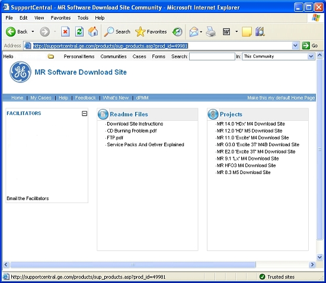

GE Exclusive Use Only
Direction 5500113, Rev# 3
Module Version 4.0, Version Date 6/3/09
GE Exclusive Use Only |
| Condition | Reference | Effectivity |
|---|---|---|
Updates are loaded after MR_Apps and Service Software, and after Discovery Software is up and running. | - | - |
Restart the host computer to access the login screen. When prompted, log in as the root user, and click [Yes] to invoke the Guided Install.
Expand Utilities and click on [Patches], then click on the [Patches] tab as displayed in Illustration 1.
There are two methods for loading software updates on the Linux host computer: from the Repository or a CD/DVD.
Click on the update you want to load to highlight it and click [Install].
If the update was properly loaded, it will display in the Installed Patches section. In addition to seeing it there, the message Install Done displays in the status section of the GUI to indicate a successful load.
The update process looks for software revision and conflict information before loading. If the software revision of the update does not match the applications revision, this message displays in the status section of the GUI: The Update cannot be loaded.
You may need to create a CD/DVD containing the new software updates for use in loading them on the Host PC(s). In order to create the Update CD/DVD, you must download the updates to your laptop and then create the CD/DVD.
Create a folder on your laptop to store the downloaded files. We recommend creating a software revision folder with a dist subdirectory.
Log onto the GE Healthcare MR Software Download Support Central site at http://supportcentral.ge.com/products/sup_products.asp?prod_id=49981, and under Projects , select the software revision that you want to download.
Illustration 4: MR Software Download Site

Under Download Files, select the update you want to download and save it to your dist directory. We recommend downloading all files identified for a particular revision.
Insert a blank CD/DVD into your laptop drive and copy the files saved in the dist folder to the CD/DVD using your CD/DVD program.
Once the data is transferred, eject the disk and complete the Linux host computer update installation as described in Loading Updates from the Repository or CD/DVD.
In the Installed Patches section, click to highlight the update that you want to remove.
Click [Uninstall] to remove the update.